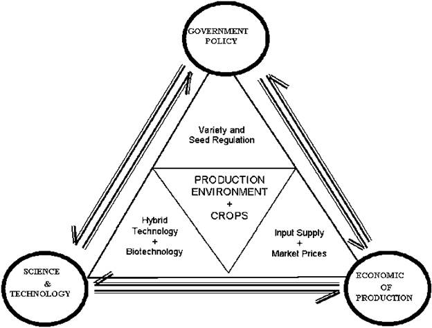

GPBR 112 :: Lecture 32 :: PRICING POLICY

Seed pricing involves setting prices when a new product is launched or a new distribution channel is used. Also, decisions may need to be taken to change the price in response to competition and to the general market situation.
In the public sector prices are often based on an economic pricing policy. Economic pricing considers the effect of seed price on the economy, taking into account the amount officials think farmers can afford to pay and the role of the seed industry in the development of agricultural production. Ideally, however, the public sector should follow a more commercial pricing policy which accounts for all costs and allows for an element of profit.
Some objectives in government seed pricing could be:
- to induce farmers to use certified seed of improved varieties in order to increase national production
- to provide adequate incentives to seed producers to supply seed in sufficient quantity to meet demand
- to encourage the development of private distribution channels
- to implement government agro-economic policies.
Some objectives in private sector seed pricing are likely to be:
- props maximization which will be the long-term target although there may be many other shorter term considerations which will influence pricing policy, such as increasing market share and gaining acceptance of new products
- price competition, may be achieved by setting a price that gives a competitive edge in the market place but may not be lower than that of a rival because other factors, such as service, will be contributing to a company's competitive advantage
- a yield 01? investment which must be at least as good as other uses for investors' funds.
Pricing strategies
Once a company's seed pricing objectives have been established, different pricing strategies must be considered. These include:
Low price strategy
Low price strategies are used where consumers respond very positively to small downward changes in price, but a company may not always gain from setting low prices as more efficient competitors may respond with similar price cuts. If the product is not particularly price sensitive then the net effect of a price reduction can simply mean a reduction in revenue. A company may be tempted to reduce its price where similar or substitute products are also sold or when there is an oversupply. However, seeds can become devalued by selling them cheaply especially where there are real benefits associated with the product. Imported vegetable seeds are often chosen by farmers in preference to locally produced varieties in the belief that they are better because they are more expensive. It is therefore critically important to understand the likely response of the farmer when adopting a low price strategy.
Market price strategy
Where a few large companies dominate supply, products tend to be similar (known in the seed industry as "me-too" varieties) and the role of price tends to be neutral, i.e. a market price is established.
High price strategy
This strategy can be used as a long- or short-term policy. In the case of the long-term policy the company will have identified a market segment for a high quality, value-added product such as graded and treated seed for precision drilling. A high price will reflect the exclusive image or added value of the product. A short-term, high-price policy takes advantage of a new product introduced onto the market, as may be the case with a new high-yielding variety where supply is limited.
Pricing techniques
The important influences on pricing are cost, demand, prices of the product's main competitors and short-term sales targets.
Cost-plus pricing
This method involves calculating the unit cost of a product and adding the appropriate profit margin to give a base price which might then be altered in relation to prevailing market conditions. While this seems a simple approach the fact that such pricing is production oriented and may therefore not reflect what is happening in the market place, makes it risky. A rigid application of cost-plus pricing may lead to price increases when demand is lower and reductions when demand is strong. This is the opposite of what should normally be done.
Contribution pricing
This is a form of cost-plus pricing which involves separating the different products that make up the product portfolio and allocating to them the direct costs associated with their production. The price is determined at a level which will generate revenues in excess of these costs, thereby contributing towards meeting business overheads. Individual products can be analysed in terms of their ability to cover their direct costs and contribute to overheads.
Competitive pricing
Where there is market competition, costs cannot always be the determining factor in pricing. Here the nature and extent of competition will have a major influence on the price. If a product is faced with direct competition from similar products the price will be restrained. In contrast, when a product is faced by indirect competition from products in different sectors of the market there will be more scope to vary the price. This provides the possibility of using different strategies.
Short-term pricing techniques
Pricing can be a useful tool for pursuing short-term marketing and sales targets. When a new variety is launched higher prices can be set, providing the opportunity of earning higher returns from those farmers willing to pay the higher prices before seed becomes more widely available. Lower prices may be linked to promotional activities such as boosting sales of established varieties, creating interest in new ones, reducing high stocks and encouraging farmers to buy early.
An overview of factors affecting the seed industry
Three broad influences determine the development and status of the seed industry, namely:
- Technology - especially the flow of new varieties from research;
- Economics - both of seed production itself and of the agricultural sector generally; and
- Policy - creates the commercial and financial environment.
All of these factors can be modified and there are many interactions between them that ultimately determine the size, viability and other characteristics of the seed industry. Figure 1 provides a diagrammatic representation of this analysis, in which various influences on the seed sector are represented within the triangle formed by these three primary elements. Policy has been placed at the top because of the major impact it can have on technology and economics. At the centre lies the production environment, which forms the basis for agriculture, and which cannot be substantially modified, except by irrigation or protected cultivation.

We should recognize seed policy as a major tool for change, but also accept that it cannot alter certain physical and environmental factors and, in a free market, it will always interact with technology and economics. In addition to the policy designed specifically for seeds, wider social and environmental policies may also have an impact on the seed sector and these may be driven by public awareness. For example, the current debate in Europe about the use of genetically-modified crops is not primarily conducted on technical issues about seeds but on wider environmental and food safety concerns. It has nonetheless had a major effect on the seed industry.
| Download this lecture as PDF here |